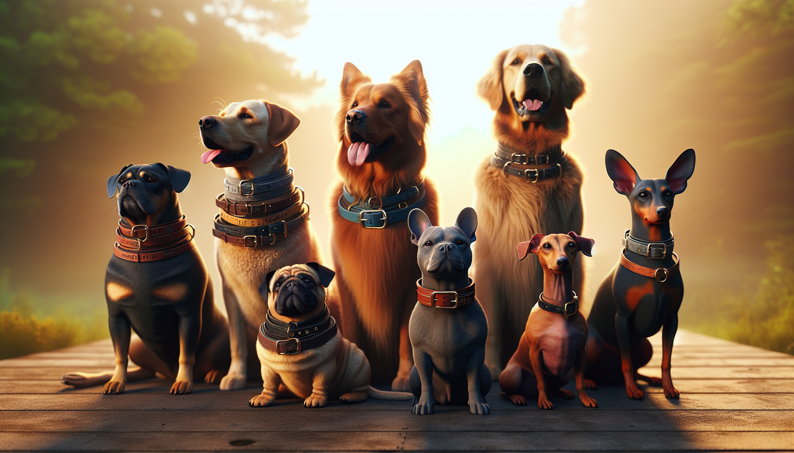

Choosing a dog collar sounds simple at first—until you see how many sizes, materials, styles, and features are out there. Add in the fact that every breed has a different neck shape, coat type, strength level, and personality, and it quickly becomes clear that the “best” collar is not one-size-fits-all. The right collar should be comfortable, secure, safe, and suited to your dog’s everyday life.
Whether you are bringing home a new puppy, upgrading your current setup, or shopping for a thoughtful gift for a dog lover, finding the perfect collar matters. A good collar helps with identification, daily walks, training, and even style. It should feel like a natural part of your dog’s routine—not something that rubs, slips, or causes stress.
In this guide, we will walk through how to choose the right dog collar for your breed, size, and lifestyle. From fit and materials to breed-specific needs and personalization, here is everything you need to know before you buy.
One of the biggest mistakes pet owners make is choosing a collar based only on weight or general size labels like small, medium, or large. Breed matters because dogs are built differently. A collar that works beautifully for a stocky Bulldog may be completely wrong for a slender Greyhound.
Begin by looking at your dog’s physical structure:
Your dog’s coat also plays a role. Fluffy breeds may need collars that do not mat the fur, while short-haired dogs may be more sensitive to rough edges or stiff materials. The more closely you match the collar to your dog’s body type, the better the fit and comfort will be.
Even the most beautiful collar is the wrong choice if it does not fit properly. A collar that is too tight can cause discomfort, skin irritation, and restricted movement. A collar that is too loose can slip off at the worst possible moment.
To measure correctly, use a soft measuring tape around the base of your dog’s neck where the collar naturally sits. Then follow the classic two-finger rule: once the collar is on, you should be able to fit two fingers comfortably between the collar and your dog’s neck.
Keep these fit tips in mind:
If you are shopping online, always compare your dog’s neck measurement to the seller’s size chart rather than guessing based on breed alone. Sizes vary widely by brand and style.
Dog collars come in a range of materials, and each one offers different benefits. The best material depends on your dog’s habits, skin sensitivity, activity level, and your own style preferences.
If your dog is rough on gear, prioritize sturdy stitching and strong hardware. If your dog has allergies or sensitive skin, choose smooth, high-quality materials that are less likely to chafe. And if style is important to you, look for a collar that blends function with a design you truly love.
There are several collar styles available, and each serves a different purpose. Choosing the right style is just as important as choosing the right size.
For dogs that pull heavily on leash, many trainers recommend using a harness for walks rather than relying on the collar alone. A collar is still essential for identification, but a harness may be safer and more comfortable for leash pressure.
A dog collar is more than an accessory—it is an important piece of safety equipment. At a minimum, your dog’s collar should hold identification tags securely and stay on comfortably during normal activity.
Look for practical features such as:
If your dog goes to daycare, hiking trips, dog parks, or family gatherings, durability becomes even more important. You want a collar that can handle real life—zoomies, splashing, rolling, and all.
Yes, function comes first—but style absolutely matters too. Your dog’s collar is something they wear every day, and it is often one of the first things people notice. A collar can reflect your dog’s personality, your aesthetic, and even the special bond you share.
Some pet parents love bright colors and playful prints. Others prefer timeless neutrals, classic leather, or seasonal designs. Gift shoppers often look for collars that feel extra meaningful, and that is where personalization really shines.
Personalized collars are especially popular because they combine style with convenience. Having your dog’s name and your contact information directly on the collar can be both beautiful and practical. It is a thoughtful choice for new dog owners, rescue adopters, holiday gifts, and pet birthday surprises.
When choosing a personalized collar, make sure the text is easy to read and the customization does not compromise comfort. The best options feel special while still being made for everyday wear.
Even a high-quality collar will not last forever. Over time, collars can stretch, fray, crack, fade, or become less secure. Regularly checking your dog’s collar helps prevent problems before they happen.
It may be time for a replacement if you notice:
Dogs change over time, and their gear should keep up. A puppy’s first collar will not be the same as the best collar for an adult dog, and a super-active young dog may later appreciate something softer and simpler. Reassessing your dog’s collar every so often is part of being a thoughtful pet parent.
When it comes to choosing the right dog collar for your breed, there is no single perfect answer for every dog. The best collar is the one that fits well, feels comfortable, suits your dog’s body type, supports their daily routine, and keeps them safe. Breed is a great starting point, but the final choice should also reflect your dog’s age, activity level, coat, behavior, and personality.
A tiny toy breed has different needs than a powerful working dog. A sleek sighthound needs a different collar style than a fluffy family companion. And every dog deserves a collar that feels as good as it looks.
If you are ready to upgrade your pup’s everyday essentials or find a meaningful gift for a fellow dog lover, personalized pet accessories are a wonderful place to start.
Shop personalized pet products at SnoutAndAbout on Etsy.